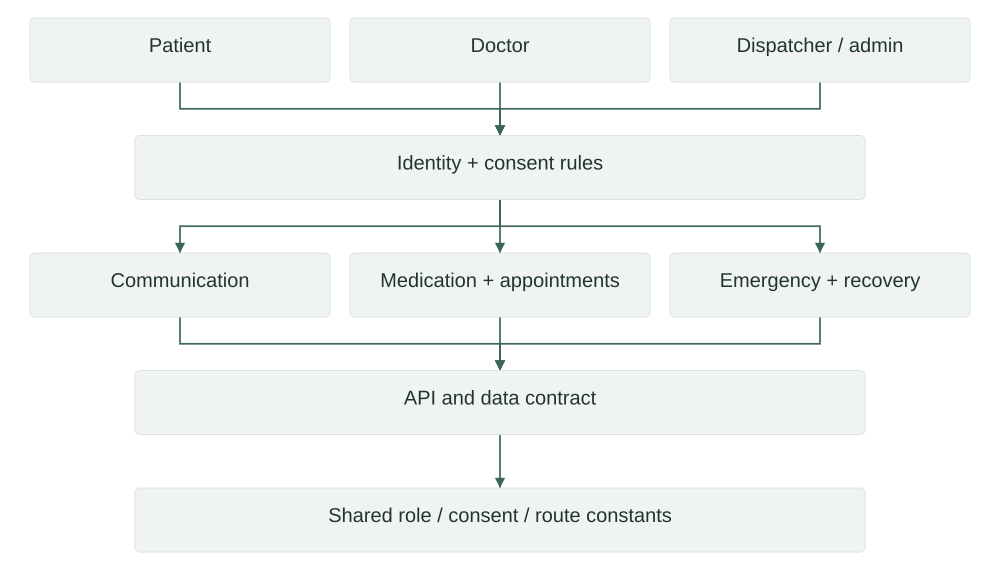

Software · Design-stage project
LifeRoute
Healthcare coordination system design
A collaborative system specification for patient communication, medication, appointments, emergency coordination, and recovery tracking.
01
Architecture
Define the roles, permissions, data structures, and interfaces needed for coordinated patient-care workflows.

02
Technical structure
| Component | Implementation | Role |
|---|---|---|
| Roles | Patient, doctor, dispatcher, admin | Access boundaries |
| Consent | Defined consent modes | Sharing choices |
| Workflows | Communication and treatment coordination | Specified features |
| Contract | Entities, API prefix, permissions | Implementation agreement |
| Shared constants | JSON definitions | Consistent identifiers |
The contract defines an /api/v1 prefix, string identifiers, ISO timestamps, user roles, consent modes, and coordinated modules. Named contributor responsibilities must remain attached to any implementation narrative.
03
Evidence & scope
| Area | Evidence | Reference |
|---|---|---|
| Available artifact | Contract and shared constants | Nine non-history local files |
| Collaboration | Responsibilities assigned across Arham, Dev and Dau | Contract work-division section |
| Implementation status | No application implementation established in this copy | Design-stage label retained |
04